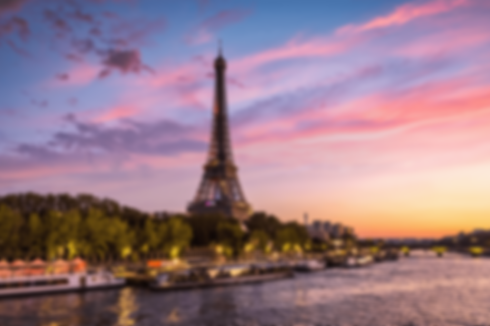
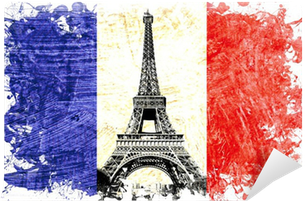
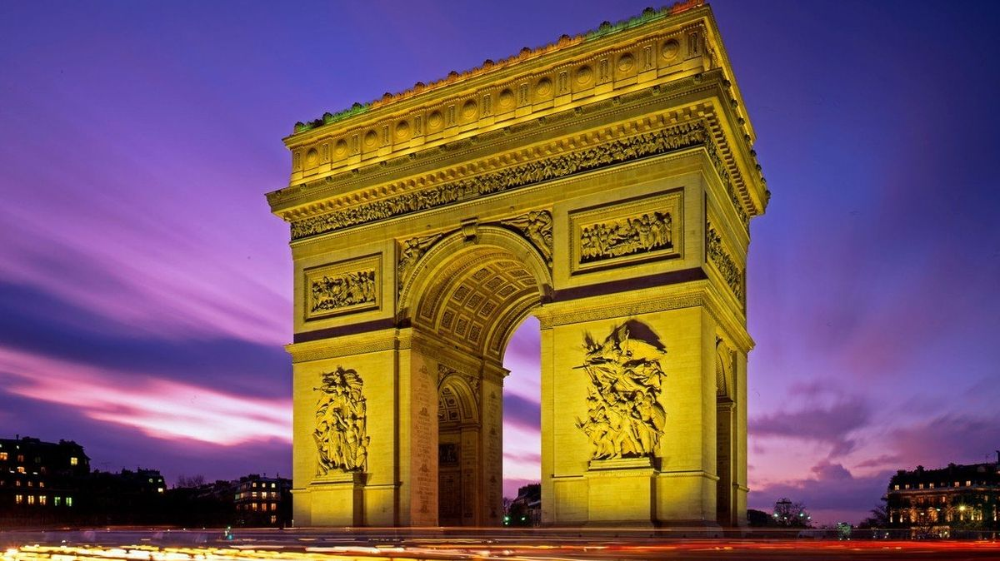
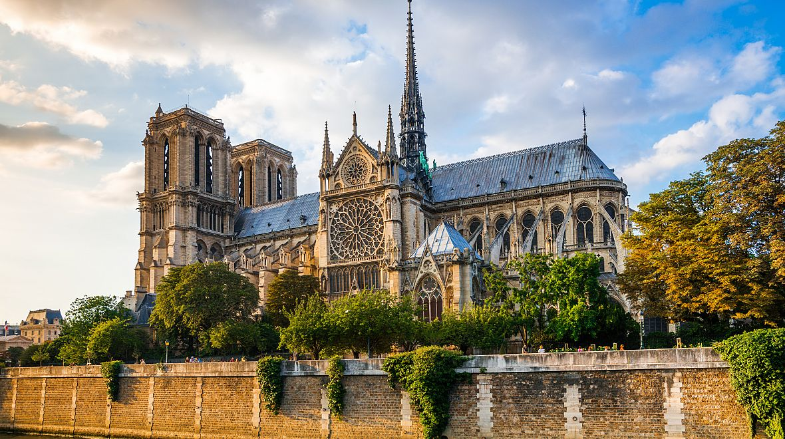
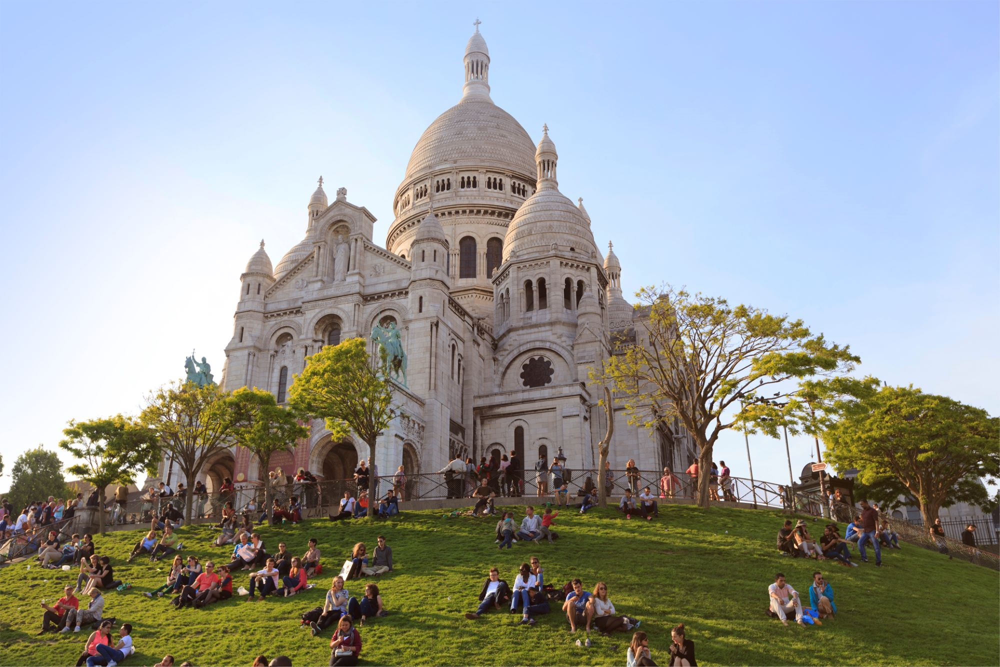

Informace o městě
Paříž je hlavním a zárověn nějvětším městem Francie. Město je významným světovým kulturním, obchodním i politickým centrem. Díky své historii, spousty památkám a jeho celkové kráse je to nejnavštěvovanější město světa. Původní latinské jméno města bylo Lutetia nebo Lutetia Parisiorum, které později ustoupilo ve prospěch jména Paříž. Celková rozloha Paříže je 643 801 km² což z něj dělá 42. největší město ve světě.
Památky
Eiffelova věž
Nejznámější památkou jak Paříže tak i Francie je Eiffelova věž, která byla postavena v roce 1889 konstruktérem Gustavem Eiffelem.


Vítězný oblouk
Napoleon Bonaparte nechal postavit Vítězný oblouk v letech 1806 až 1836 na počest francouzské armády. Nachází se na náměstí Hvězdy u slavné nákupní třídy Champs Elysées.
Katedrála Notre-Dame
Tato katedrála, spojená s postavou Hugova Quasimoda, byla dokončena ve 14. století. V chrámu se odehrály historické události, jako korunovace Napoleona a rehabilitace Johanky z Arku


Sacré Coeur
Tato bazilika, postavená v novorománsko-byzantském stylu, nabízí úchvatný výhled na Paříž. Byla dokončena až v roce 1914.
Veletrhy umění a festivaly
Tyto akce jsou pořádány jak pro profesionály ve světě umění, tak pro amatéry. Jsou to příležitosti objevit mladé talenty, umělce a galerie z celého světa. Na těchto veletrzích umění a kulturních festivalech se často konají výstavy, přehlídky a akce, které nám umožňují obdivovat nové umělce. Navíc jsou tyto akce také tržištěm: díla, která se vám líbí, si můžete koupit. Existuje řada veletrhů umění, které jsou velmi přístupné široké veřejnosti. Kresba, současné umění, městské umění, fotografie, umělecká řemesla, umění odjinud… Každý si zde najde něco pro sebe, a to po celý rok.
Celoroční kulturní kalendá
Paříž nabízí přes 150 muzeí, 200 galerií, asi 100 divadel, přes 650 kin a více než 10 000 restaurací. Nabídka kulturních událostí zahrnuje po celý rok četná divadelní a operní představení, koncerty, výstavy, hudební a filmové festivaly, módní přehlídky, ale i sportovní akce23. Tento kalendář vám poskytne přehled o kulturních akcích, které se v Paříži konají měsíc po měsíci. Můžete si tak naplánovat návštěvu podle svých zájmů a preferencí.